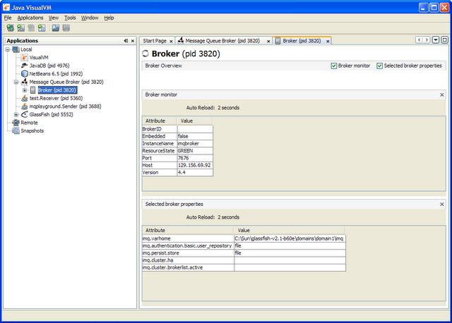

Click on any of the pictures on this page to see a larger view.
The VisualVM plugin for MQ is a simple GUI application which provides a very easy way to display the monitoring and configuration attributes exposed by a MQ broker using JMX. It is provided as a plugin to the VisualVM tool included in Java 6 (version 1.6.0_14 or later).
You can already view MQ's JMX MBeans directly using the MBean plugins for VisualVM or JConsole. This new plugin provides access to the same information but is intended to be much easier to use, providing access to most information in only a few mouse clicks, and should make it much easier to see how a group of broker attributes varies over time.
The plugin provides information about a running broker on a series of tabbed panes. The main pane provides general information about the broker. Other panes display lists of connections, consumers, producers, destinations and open transactions and show their configured and runtime attributes in a series of simple tables. You can also list the brokers in a running cluster. When you first open the tool a limited subset of all configuration and monitoring attributes exposed by MQ's JMX interface can be viewed, though you can configure the information displayed to show virtually any attribute available through JMX.
The plugin is dynamic and continually refreshed to show the current value of each attribute. So you can watch the number of messages in a queue grow and fall, see how connections come and go or view the number of open transactions.
The plugin can be used to monitor both standalone MQ brokers and those running embedded in a Glassfish instance.
When you start VisualVM with the MQ plugin installed, any MQ brokers running on the same machine will be automatic detected, given a distinctive "Duke holding plugs" icon and the name "Message Queue Broker". If the broker is embedded in a Glassfish instance the broker will be identified as a Glassfish instance.
Under the "Message Queue Broker" or "Glassfish" nodes (which represent the JVM) there will be a "Broker" note which represents the broker itself.
Double-click on the Broker node to display a tab of general information about the broker.
This is composed of two "detail views", each of which can be toggled off and on again using the checkboxes on the top right.
If the broker is not JMX-enabled, clicking on the "Broker" tab displays an error message. (This feature is only available for standalone brokers running on the same machine.)
You can also use the MQ plugin for VisualVM to monitor a broker running on another machine.
The main things to know are:
You can use "File -> Add JMX Connection" to connect directly to the remote broker. The JMX URL to use is explained in the FAQ for JMX related issues in Open Message Queue.
If you want VisualVM to "discover" JVMs running on the remote machine you must
See Working with Remote Applications in the VisualVM documentation for details.
Once you have connected to it you can monitor remote brokers (included those embedded in Glassfish) in the same way as local brokers. The only difference is that you don't see a distinctive icon for remote brokers.
You can expand the "Broker" node to see eight sub-nodes, each of which represents a particular aspect of the broker (and a particular MBean or set of MBeans):
Double-click on the "Producer" node to open a new "Producers" tab which displays a list of producers.
On the "Producers" tab, click on the "Producer manager (monitor)" checkbox to display some generic information about producers in general.
Double-click on the "Transactions" node to open a new "Transactions" tab which displays a list of open transactions as well as some generic information about transactions in general.
Double-click on the "Services" node to open a new "Services" tab which displays a list of services running in the broker as well as some generic information about services in general.
Double-click on the "Consumers" node to open a new "Consumers" tab which displays a list of consumers.
On the "Consumers" tab, click on the "Consumer manager (monitor)" checkbox to display some generic information about consumers in general.
Double-click on the "Log" node to open a new "Log" tab which displays some generic information about logging in general.
Double-click on the "Connections" node to open a new "Connections" tab which displays a list of connections.
On the "Connections" tab, click on the "Connection manager (monitor)" checkbox to display some generic information about connections in general.
Double-click on the "Cluster" node to open a new "Cluster" tab which displays a list of brokers in the cluster as well as some generic information about the cluster configuration in general of this broker.
Finally, double-click on the "Destinations" node to open a new "Destinations" tab which displays a list of destinations in this broker as well as some generic information about destinations in general.
As with all other tab views, individual "detail panes" within the "Destinations" view can be switched on and off using the checkboxes towards the top of the tab view. In this example, only the "Destination list (monitor)" detail pane is switched on. The other three detail panes are switched off.
In all detail view panes you can use the mouse to open a context menu. This has either one or two entries:
Auto reload is simply an on/off toggle. By default, attribute values will be refreshed every 2 seconds. The time interval is not configurable, but you can disable auto refresh using this menu item.
Configure attributes displayed is available in those detail view panes which display a table showing multiple attribute values for a list of items (connections, destinations etc), and where there are more attributes available than are actually displayed. Selecting this menu item opens a dialog window that allows you to choose which attributes you want to display.
The dialog shows two lists. The right list shows all the attributes currently being displayed. The left list shows all the attributes available for display that are not being displayed. To move an attribute from one list to the other, select it and then press "-->" or "<--" as appropriate. When you have completed your selection, press "OK".
You can change the order of columns by selecting the column header with the mouse and dragging it to the desired position.